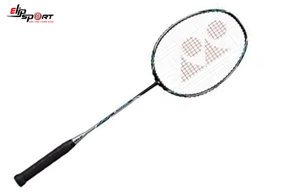

Top 10 Vợt Cầu Lông Đẹp Nhất Thế Giới
Bạn đang băn khoăn chưa biết chọn cây vợt nào sao cho phù hợp thì có thể tham khảo ngay top 10 vợt cầu lông đẹp nhất dưới đây. Đây là những mẫu vợt đến từ rất nhiều thương hiệu trên thế giới, có chất lượng cao và giá thành phải chăng.
Chọn cho mình cây vợt phù hợp sẽ giúp bạn nâng cao khả năng chơi cầu lông hiệu quả. Dưới đây là đặc trưng của top vợt cầu lông đẹp nhất bạn nên tham khảo để chọn ra cây vợt phù hợp nhất với bản thân mình.
Top 1 : Vợt cầu lông Yonex Muscle Power 29
Đặc Trưng:
Kích thước tay cầm: G4 (3,25 inch)
Trọng lượng: 3U (85-92 gram)
Màu sắc: Đen / trắng
Hình dạng đầu: Isometric
Mức chuỗi: 24 pound
Loại Strung: Strung
Vật chất: Nhôm
Khớp chữ T tích hợp
- Vợt Yonex Muscle Power 29 Light cấu tạo khung vợt bền vững và có khả năng chịu cân cực kỳ cao (lên tới 13kg).
Đây là lời khẳng định về độ bên về chất liệu tạo nên vây vợt của YONEX. trợ lực cho người chơi tốt hơn mà vẫn giữ được độ bền của vợt.
- Phù hợp cho người có lực cổ tay trung bình, trình độ trung bình Lối đánh công thủ toàn diện, kết hợp đánh đơn và đôi.
Top 2: Vợt cầu lông Yonex Voltric 5

Đặc Trưng:
Kích thước tay cầm: G4 (3,25 inch)
Trọng lượng: 3U (85-92 gram)
Màu sắc: Đen
Hình dạng đầu: Isometric
Mức chuỗi: 24 pound
Loại Strung: Strung
Vật chất: Graphite
Khung: Graphite, Tungsten
- Là cây vợt nặng đầu vì vậy Voltric 5 cho những pha tấn công thần tốc và mạnh mẽ nhất. Kết hợp thân vợt cứng, sức căng tối đa lên đến 26 LBS, đầu vợt nặng giúp Voltric 5 trở thành một trong những cây vợt thiên công nhưng lại rất linh hoạt trong việc xoay chuyển vợt nổi tiếng của dòng Voltric.
- Vợt được thiết kế với phối màu vô cùng nổi bật và ấn tượng giữ màu đen và màu vàng sáng. Lớp con sơn bóng còn giúp vợt nổi bật hơn. Những chi tiết tuy nhỏ nhưng vô cùng sắc nét và tỉ mĩ. Tạo nên một cây vợt đẹp bên ngoài, tốt bên trong. Vợt phù hợp với người chơi chuyên nghiệp, bán chuyên, người chơi trình độ khá trở lên sẽ dễ thuần vợt hơn.
Top 3: Vợt cầu lông Li-Ning US 930
Đặc Trưng:
Thành phần - than chì cacbon
Trọng lượng: 3U (85-92 gram)
Tính linh hoạt - mềm mại
Hình dạng đầu: Isometric
Mức chuỗi: 24 pound
Kích thước tay cầm - S2
Độ căng dây (34 đến 37lbs)
Khớp chữ T tích hợp
- Vợt được tích hợp công nghệ tb nano và được sản xuất từ 100% những sợi carbon cao cấp làm tăng độ bền độ rắn chắc giảm thiểu mức độ khi có va chạm
-Thân vợt mềm độ đàn hồi cân bằng thích hợp sử dụng đối với những người chơi cầu tinh tế
Top4. Vợt cầu lông APACS Feather Weight 200
Đặc Trưng:
Loại Strung: - Unstrung
Kích thước tay cầm: G4 - 8.25 cm
Màu sắc: Đen / trắng
Trọng lượng: 69 g
Mức chuỗi: 24 pound
Loại Strung: Strung
Hình dạng đầu: - Hình dạng đẳng áp
Chiều rộng chùm tia: - 20 mm
- Đây là một trong những cây vợt nhẹ nhất được sản xuất bởi Apacs. Thiết kế khung tốc độ cao của cây vợt này giúp nó cực kỳ nhanh khi đánh liên tục và có âm thanh vang. Và việc áp dụng CNT (Công nghệ Carbon NanoTube) đã cải thiện đáng kể hiệu suất và cảm giác của vợt.
- Cây vợt này được thiết kế để cung cấp cho bạn những cú đập sắc nét hơn và đồng thời cho phép bạn tận hưởng những cú đánh và thả lưới chính xác. Cây vợt được phát triển với "Khung tốc độ cao" mới giúp tăng tốc độ trong cú swing, và cải thiện tổng thể thực hiện với sức mạnh và nhiều liểm soát hơn.
Top 5: Vợt cầu lông Yonex Nanoray Light 9i
Đặc Trưng:
Kích thước tay cầm: G4 (3,25 inch)
Trọng lượng: 5U (75-79,9 gram)
Màu sắc: Đen /h4>
Hình dạng đầu: Isometric
Mức chuỗi: 24 pound
Chất liệu: Graphite
Trục - Graphite, nanomesh + ống nano carbon
Khớp chữ T tích hợp
- Được thiết kế với vẻ ngoài mang ba phối màu mạnh mẽ là Đen/Cam/Xanh lá rất bắt mắt gây ấn tượng cho người chơi từ những cái nhìn đầu tiên. Điều này càng giúp người chơi có lối đánh tự tin hơn trên sân.
- Ngoài ra với trọng lượng siêu nhẹ 5U tương đương 78gr và sức căng tối đa lên đến 12.5kg được Yonex cho ra mắt cùng hàng loạt những công nghệ tiên tiến hàng đầu áp dụng lên toàn bộ cây vợt giúp cho dòng vợt siêu nhẹ này có tốc độ vung vợt cực nhanh và kiểm soát đường cầu rất tốt.
Top 6: Vợt cầu lông Li-Ning SS 88 G4 +
Đặc Trưng:
Kích thước tay cầm: G4 (3,25 inch)
Thành phần - than chì cacbon
Màu sắc: Đen / trắng
Hình dạng đầu: Isometric
Mức chuỗi: 24 pound
Tính linh hoạt - trung bình
Thành phần - than chì cacbon
Khớp chữ T tích hợp
- Sản xuất bằng chất liệu carbon Graphite cùng với thiết kế tối ưu hóa cải thiện cấu trúc cơ học của vợt, nâng cao hiệu quả của việc tấn công và phòng thủ.
- Vợt còn được tích hợp công nghệ cao làm giảm lực cản không khí cung cấp độ chống mài mòn cao hơn tối đa hóa tăng kiểm soát và quay lại trận đấu nhanh hơn.
Top 7: Yonex New Muscle Power MP 55
Đặc Trưng:
Chất liệu khung - Carbon Graphite
Vật liệu trục - Graphite mô đun cao
Trọng lượng - 3U (85-92 gram)
Kích thước tay cầm - G4 (3,5 inch)
Mức chuỗi: 24 pound
Loại số dư - Số dư đồng đều
Pre-Strung - Strung
Khớp chữ T tích hợp
- Vợt Yonex Muscle Power 55 Light new 2022 cấu tạo khung vợt bền vững và có khả năng chịu cân cực kỳ cao (lên tới 13kg). Đây là lời khẳng định về độ bên về chất liệu tạo nên vây vợt của YONEX. trợ lực cho người chơi tốt hơn mà vẫn giữ được độ bền của vợt.
- -Phù hợp cho người có lực cổ tay trung bình, trình độ trung bình Lối đánh công thủ toàn diện, kết hợp đánh đơn và đôi.
Top 8: Vợt cầu lông Victor Arrow Power 7000-S
Đặc Trưng:
Loại Strung: - Unstrung
Kích thước tay cầm: G5 - 7.62 cm
Trọng lượng: 89 g
Hình dạng đầu: Isometric
Mức chuỗi: 24 pound
Loại Strung: Strung
Chiều rộng chùm: - 10 mm
Hình dạng đầu: - Hình dạng đẳng áp
- Victor TK 7000S New là cây vợt công thủ toàn diện, nặng đầu, thiên về tấn công nhiều hơn, giúp người chơi có được những cú tấn công đầy uy lực và tốc độ phản công nhanh hơn.
- Bên ngoài Victor TK 7000S New được thiết với màu sơn đỏ đen cùng họa tiết màu vàng bắt mắt, là màu vợt rất phổ biến và luôn thể hiện sự mạnh mẽ cũng như tính thẩm mĩ cao. Người chơi sẽ thấy tự tin hơn và đẳng cấp hơn trong từng bước chạy của mình trên sân.
Top 9: Vợt cầu lông Li-Ning G-Force Lite 100 Carbon-Graphite
Đặc Trưng:
Thành phần - than chì cacbon
Tính linh hoạt - trung bình
Trọng lượng: 78 gm
Hình dạng đầu: Isometric
Kích thước tay cầm: S1
Độ căng dây (lbs): 28-30
Vật chất: Nhôm
Vật chất: Carbon-graphite
- Vợt Lining G-Force Lite 100 Carbon-Graphite đàn em nhỏ tuổi đang gây bão trong giới cầu lông thời gian gần đây bởi giá thành rẻ nhưng chất lượng mang lại rất đáng kinh ngạc. Cây vợt phù hợp cho đại đa số người sử dụng, người mới làm quen với bộ môn cầu lông đều có thể sử dụng 1 cách dễ dàng.
Không chỉ tính năng mà cây vợt mang lại mà cả màu sắc cũng khiến con tim trong
giới cũng phải điên đảo.
Tất cả tạo nên 1 cây Vợt Lining G-Force Lite 100 Carbon-Graphite hoàn hảo.
- Phù hợp cho người có lực cổ tay trung bình, trình độ trung bình Lối đánh công thủ toàn diện, kết hợp đánh đơn và đôi.
Top 10: Vợt cầu lông Apacs Dual Power Speed Version
Đặc Trưng:
Kích thước tay cầm: G4 (3,25 inch)
Trọng lượng: 3U (85-92 gram)
Loại Strung: - Unstrung
Hình dạng đầu: Isometric
Mức chuỗi: 24 pound
Loại Strung: Strung
Hình dạng đầu: - Hình dạng đẳng áp
Chiều rộng chùm tia: - 20 mm
- Apacs Dual - Power & Speed thuộc dòng vợt cân bằng, nhẹ đầu thích hợp đánh công thủ toàn diện, vượt trội trong khả năng điều cầu và trên lưới tốt hơn
- Sức căng tối đa lên đến 38 LBS cho phép vợt tạo ra một đường cầu ổn định đi đúng hướng người chơi. Trong các pha bỏ nhỏ, kéo lưới, Apacs Dual - Power & Speed thường xuyên tạo ra pha cầu leo lưới cực kì khó chịu cho đối thủ.